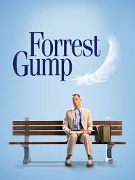

Merhaba, ben Tuğba Kayaçağlayan. Siyaset bilimi mezunuyum ve web geliştirmeyle ilgilenmeye başladım. Kitap okumayı seviyorum.
Forrest Gump (1994)
Nazik ve dost canlısı bir adam, birtakım olağanüstü olaylar yaşarken bitmez tükenmez iyimserliğiyle etrafındakilere ilham kaynağı olur.